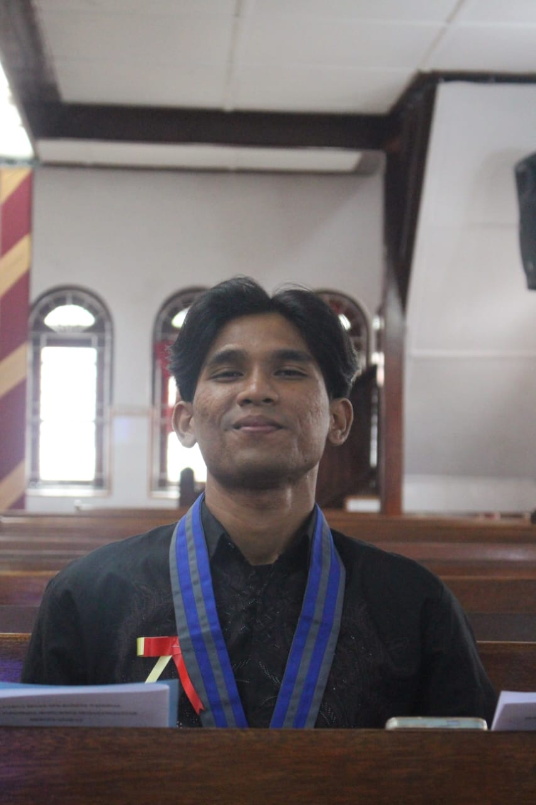
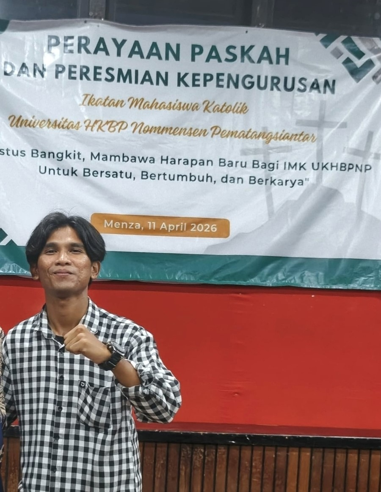
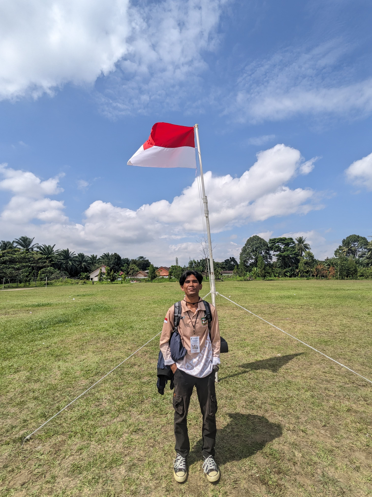
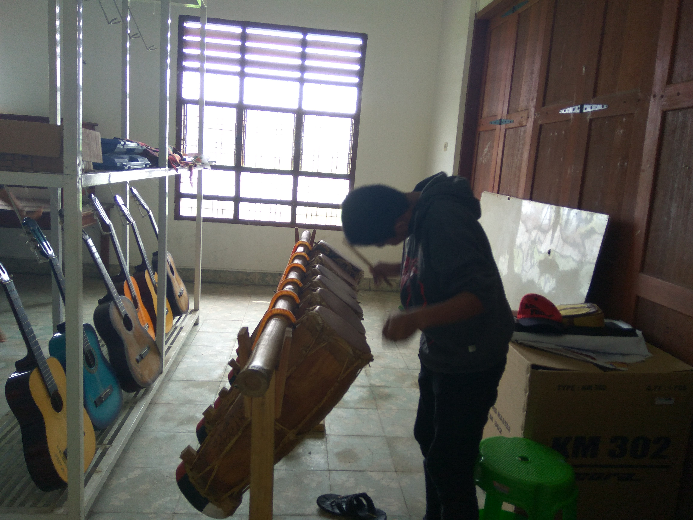
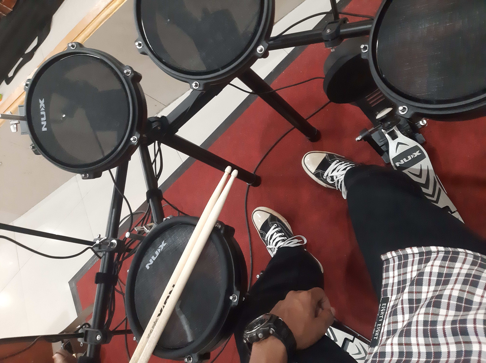
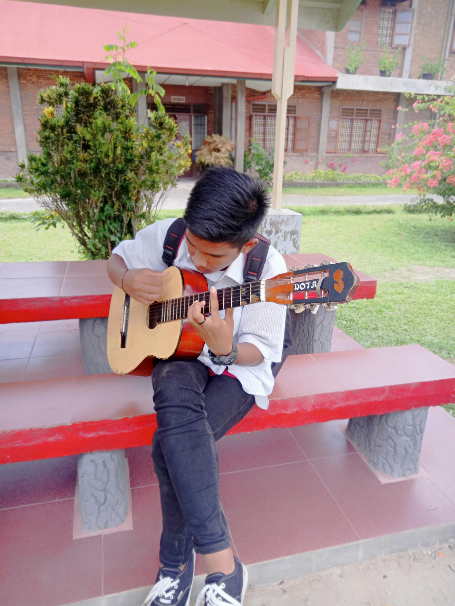

Perjalanan saya dalam dunia Ilmu Komputer, organisasi, dan pengembangan diri.
Mendalami Ilmu Komputer dan mulai membangun berbagai project.
Komandan Tingkat (KOMTING 24IK4)
Ketua Komisariat GMKI PSS
Memimpin dan mengkoordinasi kegiatan organisasi serta meningkatkan partisipasi anggota.

Ketua Keluarga Mahasiswa Katolik Nommensen
Mengelola program kerja dan membangun hubungan antar anggota organisasi.

Anggota GAMKI
Berperan aktif dalam berbagai kegiatan kepemudaan dan organisasi.


Memainkan alat musik tradisional dengan penuh penghayatan dan pelestarian budaya.

Menguasai dasar rhythm dan koordinasi untuk menjaga tempo dalam sebuah musik.

Mampu memainkan gitar sebagai alat musik modern untuk berbagai genre dan suasana.
Halaman ini akan terus diperbarui seiring perjalanan saya berkembang. Nantikan cerita lengkapnya.